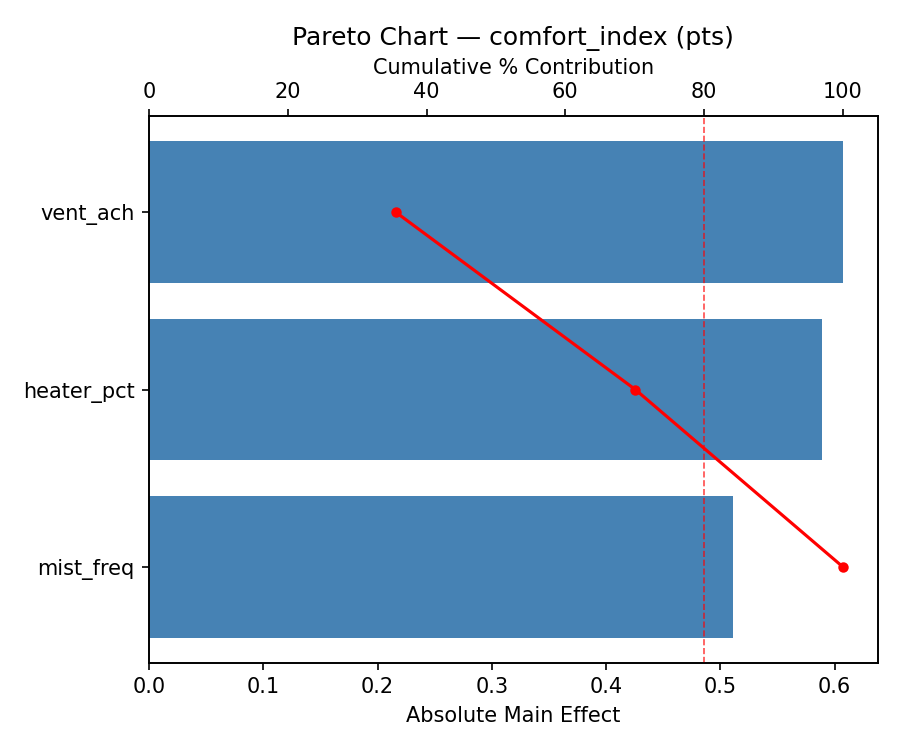
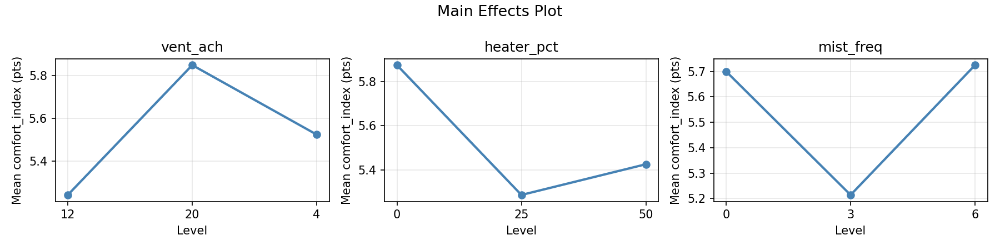
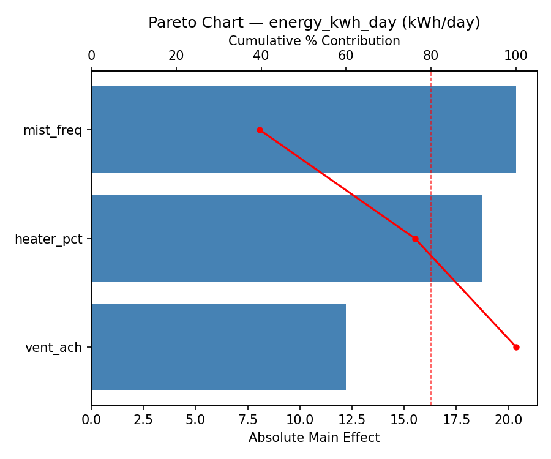
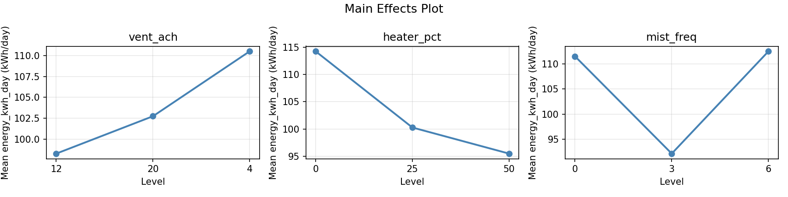
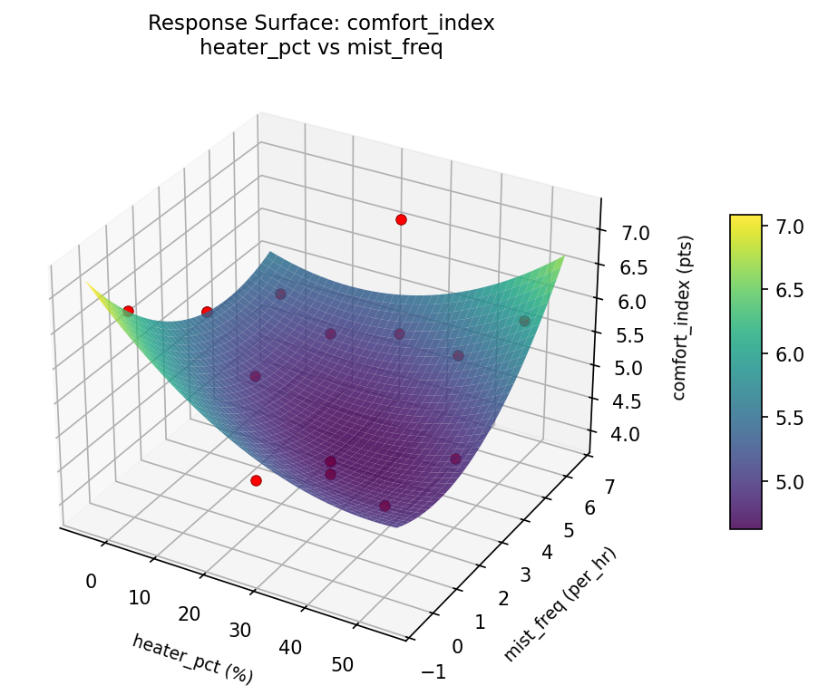
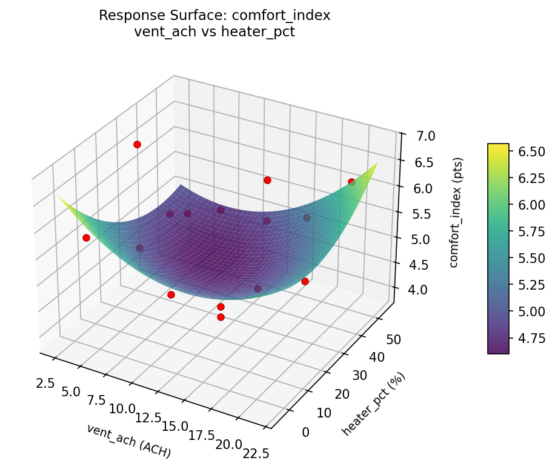
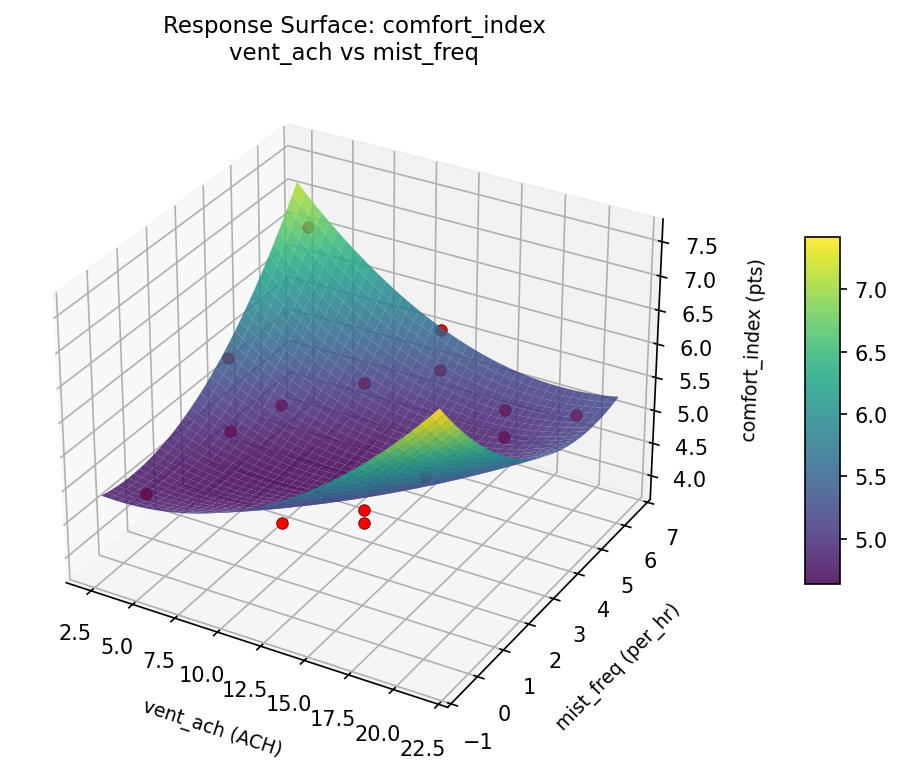
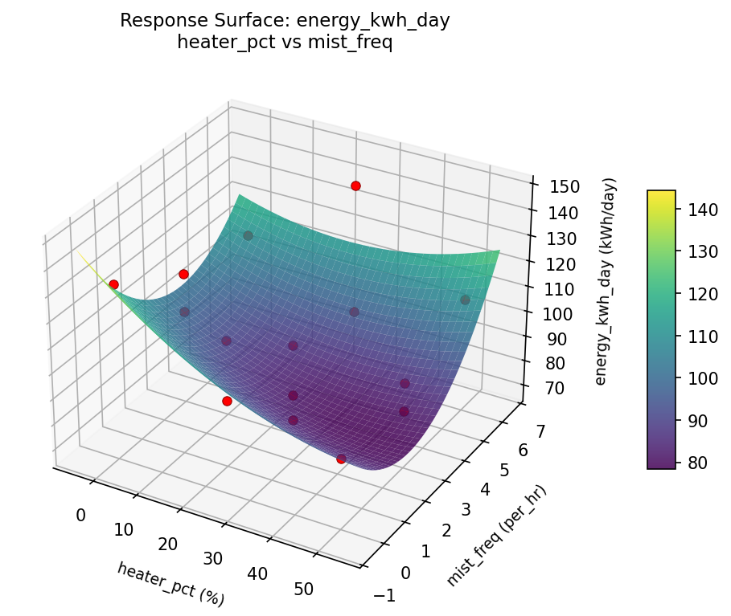
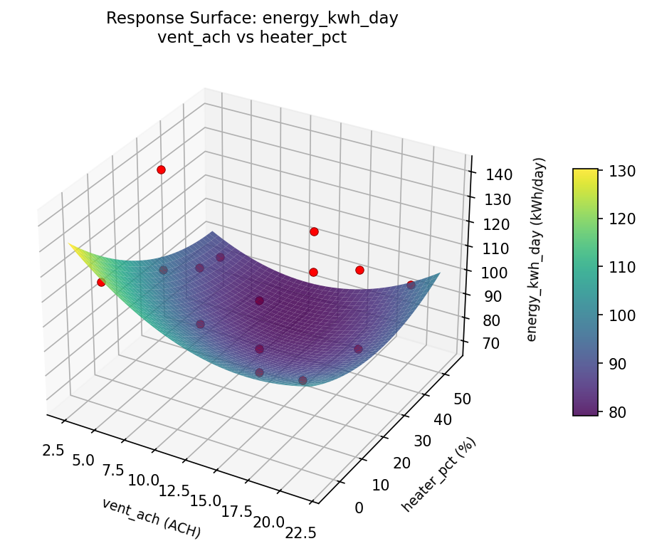

Summary
This experiment investigates livestock barn climate control. Box-Behnken design to maximize animal comfort index and minimize energy cost by tuning ventilation rate, radiant heater coverage, and misting frequency.
The design varies 3 factors: vent ach (ACH), ranging from 4 to 20, heater pct (%), ranging from 0 to 50, and mist freq (per_hr), ranging from 0 to 6. The goal is to optimize 2 responses: comfort index (pts) (maximize) and energy kwh day (kWh/day) (minimize). Fixed conditions held constant across all runs include barn = dairy_freestall, capacity = 200.
A Box-Behnken design was chosen because it efficiently fits quadratic models with 3 continuous factors while avoiding extreme corner combinations — requiring only 15 runs instead of the 8 needed for a full factorial at two levels.
Quadratic response surface models were fitted to capture potential curvature and factor interactions. The RSM contour plots below visualize how pairs of factors jointly affect each response.
Key Findings
For comfort index, the most influential factors were vent ach (35.6%), heater pct (34.5%), mist freq (29.9%). The best observed value was 6.8 (at vent ach = 12, heater pct = 0, mist freq = 6).
For energy kwh day, the most influential factors were mist freq (39.7%), heater pct (36.5%), vent ach (23.8%). The best observed value was 69.0 (at vent ach = 12, heater pct = 25, mist freq = 3).
Recommended Next Steps
- Run confirmation experiments at the predicted optimal settings to validate the model.
- Consider whether any fixed factors should be varied in a future study.
Experimental Setup
Factors
| Factor | Low | High | Unit |
|---|
vent_ach | 4 | 20 | ACH |
heater_pct | 0 | 50 | % |
mist_freq | 0 | 6 | per_hr |
Fixed: barn = dairy_freestall, capacity = 200
Responses
| Response | Direction | Unit |
|---|
comfort_index | ↑ maximize | pts |
energy_kwh_day | ↓ minimize | kWh/day |
Configuration
{
"metadata": {
"name": "Livestock Barn Climate Control",
"description": "Box-Behnken design to maximize animal comfort index and minimize energy cost by tuning ventilation rate, radiant heater coverage, and misting frequency"
},
"factors": [
{
"name": "vent_ach",
"levels": [
"4",
"20"
],
"type": "continuous",
"unit": "ACH"
},
{
"name": "heater_pct",
"levels": [
"0",
"50"
],
"type": "continuous",
"unit": "%"
},
{
"name": "mist_freq",
"levels": [
"0",
"6"
],
"type": "continuous",
"unit": "per_hr"
}
],
"fixed_factors": {
"barn": "dairy_freestall",
"capacity": "200"
},
"responses": [
{
"name": "comfort_index",
"optimize": "maximize",
"unit": "pts"
},
{
"name": "energy_kwh_day",
"optimize": "minimize",
"unit": "kWh/day"
}
],
"settings": {
"operation": "box_behnken",
"test_script": "use_cases/300_barn_climate_control/sim.sh"
}
}
Experimental Matrix
The Box-Behnken Design produces 15 runs. Each row is one experiment with specific factor settings.
| Run | vent_ach | heater_pct | mist_freq |
|---|
| 1 | 12 | 0 | 0 |
| 2 | 12 | 25 | 3 |
| 3 | 20 | 25 | 6 |
| 4 | 20 | 25 | 0 |
| 5 | 12 | 25 | 3 |
| 6 | 12 | 25 | 3 |
| 7 | 4 | 25 | 6 |
| 8 | 20 | 0 | 3 |
| 9 | 12 | 0 | 6 |
| 10 | 20 | 50 | 3 |
| 11 | 4 | 25 | 0 |
| 12 | 12 | 50 | 6 |
| 13 | 4 | 0 | 3 |
| 14 | 4 | 50 | 3 |
| 15 | 12 | 50 | 0 |
Step-by-Step Workflow
1
Preview the design
$ python doe.py info --config use_cases/300_barn_climate_control/config.json
2
Generate the runner script
$ python doe.py generate --config use_cases/300_barn_climate_control/config.json \
--output use_cases/300_barn_climate_control/results/run.sh --seed 42
3
Execute the experiments
$ bash use_cases/300_barn_climate_control/results/run.sh
4
Analyze results
$ python doe.py analyze --config use_cases/300_barn_climate_control/config.json
5
Get optimization recommendations
$ python doe.py optimize --config use_cases/300_barn_climate_control/config.json
6
Generate the HTML report
$ python doe.py report --config use_cases/300_barn_climate_control/config.json \
--output use_cases/300_barn_climate_control/results/report.html
Real-World Experiment Workflow
ℹ
Physical Farm & Livestock Experiment? Use the Manual Workflow
Livestock experiments involve real animals, feed, facilities, and biological responses that can't be simulated. The simulation script above is for demonstration. For your real experiments, use record, status, and export-worksheet.
$ python doe.py export-worksheet --config use_cases/300_barn_climate_control/config.json \
--format csv --output worksheet.csv
$ python doe.py status --config use_cases/300_barn_climate_control/config.json
$ python doe.py record --config use_cases/300_barn_climate_control/config.json --run 1
$ python doe.py analyze --config use_cases/300_barn_climate_control/config.json --partial
$ python doe.py analyze --config use_cases/300_barn_climate_control/config.json
$ python doe.py optimize --config use_cases/300_barn_climate_control/config.json
$ python doe.py report --config use_cases/300_barn_climate_control/config.json \
--output report.html
✔
Works Without a Test Script
The analysis pipeline doesn't care how results were produced. Record your measurements with record, and the full analysis, optimization, and reporting pipeline works identically. Use --partial to get early insights before all runs are complete.
Features Exercised
| Feature | Value |
|---|
| Design type | box_behnken |
| Factor types | continuous (all 3) |
| Arg style | double-dash |
| Responses | 2 (comfort_index ↑, energy_kwh_day ↓) |
| Total runs | 15 |
Analysis Results
Generated from actual experiment runs using the DOE Helper Tool.
Response: comfort_index
Top factors: vent_ach (35.6%), heater_pct (34.5%), mist_freq (29.9%).
Pareto Chart

Main Effects Plot

Response: energy_kwh_day
Top factors: mist_freq (39.7%), heater_pct (36.5%), vent_ach (23.8%).
Pareto Chart

Main Effects Plot

Response Surface Plots
3D surfaces fitted with quadratic RSM. Red dots are observed data points.
comfort index heater pct vs mist freq

comfort index vent ach vs heater pct

comfort index vent ach vs mist freq

energy kwh day heater pct vs mist freq

energy kwh day vent ach vs heater pct

energy kwh day vent ach vs mist freq

Full Analysis Output
RSM surface: rsm_comfort_index_vent_ach_vs_heater_pct.png
RSM surface: rsm_comfort_index_vent_ach_vs_mist_freq.png
RSM surface: rsm_comfort_index_heater_pct_vs_mist_freq.png
RSM surface: rsm_energy_kwh_day_vent_ach_vs_heater_pct.png
RSM surface: rsm_energy_kwh_day_vent_ach_vs_mist_freq.png
RSM surface: rsm_energy_kwh_day_heater_pct_vs_mist_freq.png
=== Main Effects: comfort_index ===
Factor Effect Std Error % Contribution
--------------------------------------------------------------
vent_ach 0.6071 0.2281 35.6%
heater_pct 0.5893 0.2281 34.5%
mist_freq 0.5107 0.2281 29.9%
=== Summary Statistics: comfort_index ===
vent_ach:
Level N Mean Std Min Max
------------------------------------------------------------
12 7 5.2429 1.0147 3.9000 6.7000
20 4 5.8500 0.5447 5.1000 6.3000
4 4 5.5250 0.9845 4.7000 6.8000
heater_pct:
Level N Mean Std Min Max
------------------------------------------------------------
0 4 5.8750 0.6185 5.2000 6.7000
25 7 5.2857 1.1127 3.9000 6.8000
50 4 5.4250 0.6946 4.7000 6.2000
mist_freq:
Level N Mean Std Min Max
------------------------------------------------------------
0 4 5.7000 0.9416 4.8000 6.7000
3 7 5.2143 0.9582 3.9000 6.2000
6 4 5.7250 0.7805 5.1000 6.8000
=== Main Effects: energy_kwh_day ===
Factor Effect Std Error % Contribution
--------------------------------------------------------------
mist_freq 20.3571 5.0147 39.7%
heater_pct 18.7500 5.0147 36.5%
vent_ach 12.2143 5.0147 23.8%
=== Summary Statistics: energy_kwh_day ===
vent_ach:
Level N Mean Std Min Max
------------------------------------------------------------
12 7 98.2857 21.0215 69.0000 132.0000
20 4 102.7500 14.0089 91.0000 123.0000
4 4 110.5000 23.5301 86.0000 141.0000
heater_pct:
Level N Mean Std Min Max
------------------------------------------------------------
0 4 114.2500 13.3760 100.0000 132.0000
25 7 100.2857 24.8107 69.0000 141.0000
50 4 95.5000 9.4692 86.0000 108.0000
mist_freq:
Level N Mean Std Min Max
------------------------------------------------------------
0 4 111.5000 19.1920 91.0000 132.0000
3 7 92.1429 15.2799 69.0000 115.0000
6 4 112.5000 20.8247 91.0000 141.0000
Pareto chart (comfort_index): use_cases/300_barn_climate_control/results/analysis/pareto_comfort_index.png
Pareto chart (energy_kwh_day): use_cases/300_barn_climate_control/results/analysis/pareto_energy_kwh_day.png
Main effects (comfort_index): use_cases/300_barn_climate_control/results/analysis/main_effects_comfort_index.png
Main effects (energy_kwh_day): use_cases/300_barn_climate_control/results/analysis/main_effects_energy_kwh_day.png
Optimization Recommendations
=== Optimization: comfort_index ===
Direction: maximize
Best observed run: #10
vent_ach = 12
heater_pct = 0
mist_freq = 6
Value: 6.8
RSM Model (linear, R² = 0.1616, Adj R² = -0.0671):
Coefficients:
intercept +5.4800
vent_ach -0.2250
heater_pct -0.4000
mist_freq +0.1000
RSM Model (quadratic, R² = 0.2973, Adj R² = -0.9677):
Coefficients:
intercept +5.0333
vent_ach -0.2250
heater_pct -0.4000
mist_freq +0.1000
vent_ach*heater_pct +0.1250
vent_ach*mist_freq -0.3750
heater_pct*mist_freq +0.1250
vent_ach^2 +0.2958
heater_pct^2 +0.3458
mist_freq^2 +0.1958
Curvature analysis:
heater_pct coef=+0.3458 convex (has a minimum)
vent_ach coef=+0.2958 convex (has a minimum)
mist_freq coef=+0.1958 convex (has a minimum)
Notable interactions:
vent_ach*mist_freq coef=-0.3750 (antagonistic)
Predicted optimum (from linear model):
vent_ach = 4
heater_pct = 0
mist_freq = 3
Predicted value: 6.1050
Model quality: Weak fit — consider adding center points or using a different design.
Factor importance:
1. heater_pct (effect: 0.8, contribution: 52.2%)
2. vent_ach (effect: 0.5, contribution: 31.5%)
3. mist_freq (effect: 0.3, contribution: 16.3%)
=== Optimization: energy_kwh_day ===
Direction: minimize
Best observed run: #13
vent_ach = 12
heater_pct = 25
mist_freq = 3
Value: 69.0
RSM Model (linear, R² = 0.2406, Adj R² = 0.0335):
Coefficients:
intercept +102.7333
vent_ach -4.2500
heater_pct -11.6250
mist_freq -2.3750
RSM Model (quadratic, R² = 0.4795, Adj R² = -0.4575):
Coefficients:
intercept +85.6667
vent_ach -4.2500
heater_pct -11.6250
mist_freq -2.3750
vent_ach*heater_pct -3.7500
vent_ach*mist_freq -3.2500
heater_pct*mist_freq -0.5000
vent_ach^2 +8.1667
heater_pct^2 +13.9167
mist_freq^2 +9.9167
Curvature analysis:
heater_pct coef=+13.9167 convex (has a minimum)
mist_freq coef=+9.9167 convex (has a minimum)
vent_ach coef=+8.1667 convex (has a minimum)
Notable interactions:
vent_ach*heater_pct coef=-3.7500 (antagonistic)
vent_ach*mist_freq coef=-3.2500 (antagonistic)
heater_pct*mist_freq coef=-0.5000 (antagonistic)
Predicted optimum (from linear model):
vent_ach = 4
heater_pct = 0
mist_freq = 3
Predicted value: 118.6083
Model quality: Weak fit — consider adding center points or using a different design.
Factor importance:
1. heater_pct (effect: 24.2, contribution: 53.1%)
2. vent_ach (effect: 10.7, contribution: 23.5%)
3. mist_freq (effect: 10.7, contribution: 23.5%)